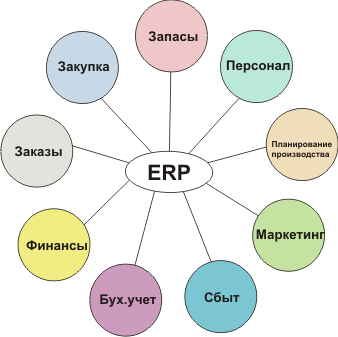

Система SAP R/3 относится к ERP системам. Enterprise Resource Planning (ERP) переводится как «планирование ресурсов предприятия». Этот термин относится к типу программного обеспечения, которое используется организациями для управления такими повседневными бизнес-операциями, как бухгалтерский учет, закупки, управление проектами, управление рисками и обеспечение нормативно-правового соответствия, а также управление цепями поставок. Пакет ERP также включает решение по управлению эффективностью предприятия, которое помогает планировать операции, составлять бюджет и прогнозы и создавать отчеты о финансовых результатах компании.
Системы ERP объединяют многочисленные бизнес-процессы и обеспечивают передачу данных между ними. Собирая общие операционные данные организации из множества источников, ERP-системы устраняют дублирование и обеспечивают целостность данных с помощью «единого источника достоверных данных».

Цель разворачивания любой ERP-системы — оптимизировать расходы и ресурсы организации. Чтобы ее достичь, решаются конкретные задачи: создать общее пространство взаимодействия компонентов, настроить обмен данных, сделать доступ к ним простым, понятным и др. ERP-система устанавливает единые стандарты для процессов на производстве, работы удаленных подразделений и сотрудников, с ней намного проще определять их результативность. Успешное внедрение решений помогает объединить учет на складе и в бухгалтерии, отказаться от устной, бумажной передачи информации, зависимой от человеческого фактора.
Задача ERP — помочь предприятию избежать задержек, простоев, брака. А они возникают, если проектирование и производство не увязаны. Комплексы на общей платформе позволяют соблюсти сроки по договорам поставки. На складе не скапливается избыток продукции просто «на всякий случай», не возникает ее нехватка из-за несогласованности работы отделов.[2]